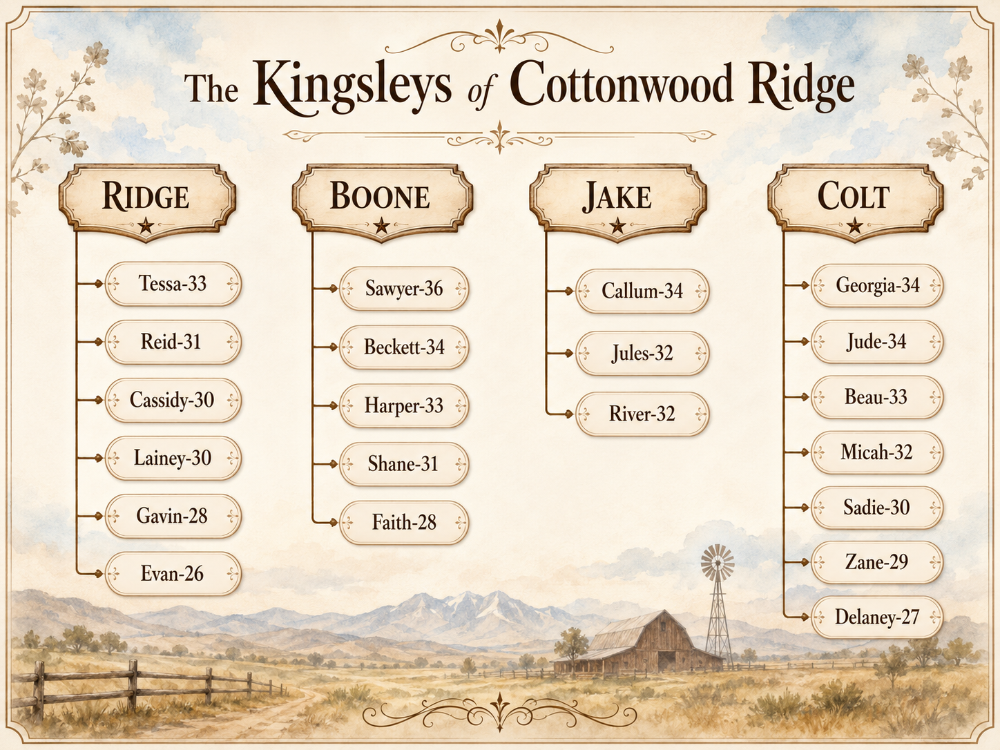

Love Only Series Page

.png)
The Kingsleys of Cottonwood Ridge
Cowboy Boots Meet Corporate Boardrooms
A billionaire ranching family in Cottonwood Ridge where cowboy boots meet corporate boardrooms — and love shows up when you least expect it. Sweet cowboy romance with a wealthy twist.

Beau KingsleySawyer KingsleyBeckett KingsleyHarper KingsleyShane KingsleyFaith KingsleyCallum KingsleyLainey KingsleyZane KingsleyThe Kingsleys of Cottonwood Ridge (Sweet Cowboy Romance)

Santa Cowboy
The Kingsleys #1

Saddle Up, Cowgirl
The Kingsleys #2

Rescue Me, Cowboy
The Kingsleys #3

Comeback Cowgirl
The Kingsleys #4

Christmas Carol Cowgirl
The Kingsleys #5

Trust Me, Cowboy
The Kingsleys #6

Walk With Me, Cowboy
The Kingsleys #7

Convince Me, Cowboy
The Kingsleys #8 · Pre-order Aug 31

Hold Still, Cowboy
The Kingsleys #9 · Pre-order Dec 14
Kingsleys Short Stories

A Santa Hat and A Cowboy Song
The Kingsleys Short Story #1

Bylines and Boots
The Kingsleys Short Story #2

Sage and Spurs
The Kingsleys Short Story #3

Boots, Vows, and Second Chances
The Kingsleys Short Story #4

Butterflies and Bridles
The Kingsleys Short Story #5

Raindrops and Saddles
The Kingsleys Short Story #6

Touchdowns and Tulips
The Kingsleys Short Story #7

Coffee Cups and Corrals
The Kingsleys Short Story #8